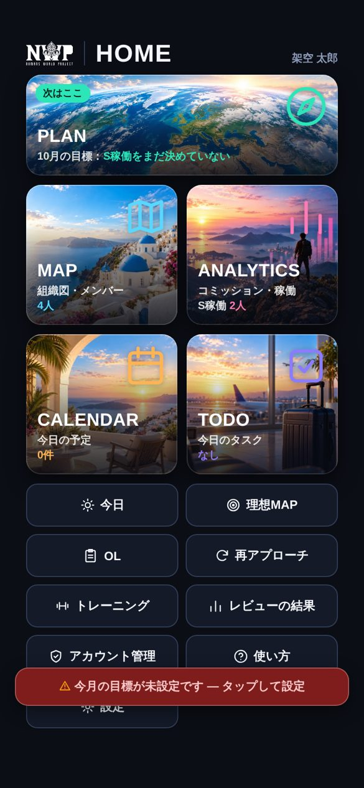
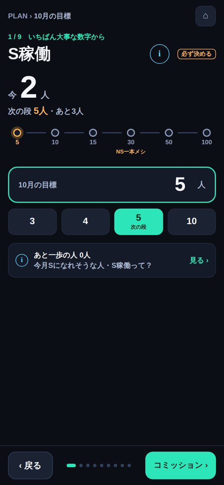
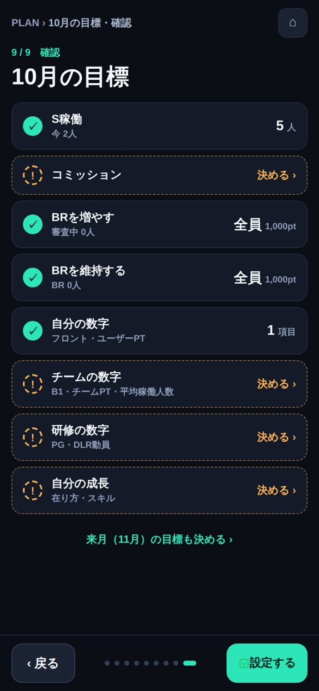
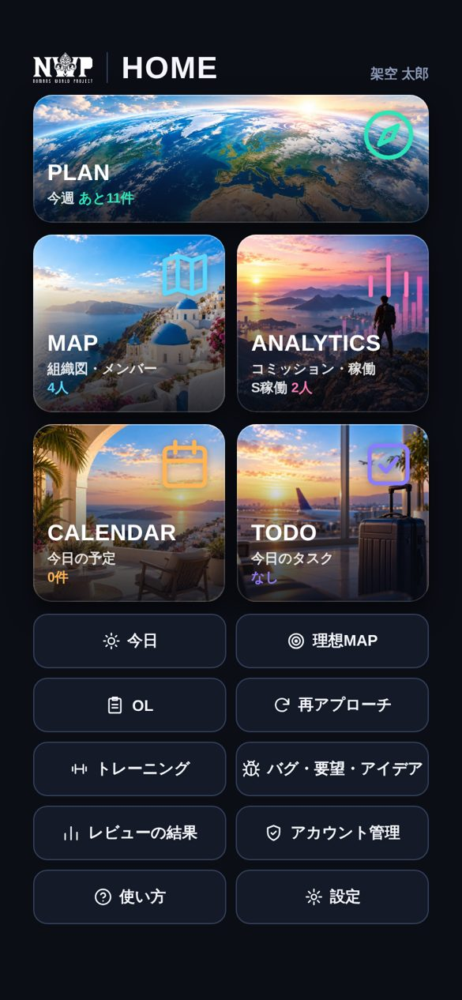
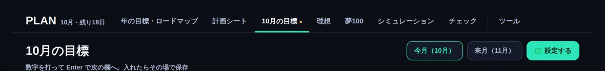

HOME の下に出る赤い帯 ⚠ 今月の目標が未設定です は、今月の目標を最後の「設定する」まで押していないと出ます。計画シートを書いただけでは消えません。下の手順で設定すると消えます（約1分）。
v836 から、赤い帯を押すとすぐ目標の画面が開くようになりました。赤い帯を押しても目標の画面が開かない時は、アプリを一度閉じて開き直してください（最新版になります）。
HOME の一番上の PLAN を押しても同じ画面が開きます。

ここS稼働だけは必ず決めます（「次の段」と書いてある数字がおすすめ）。ほかの項目（コミッション・チームの数字など）は空のままでも大丈夫です。右下のボタンを押して、最後の「確認」まで進みます（全部で9画面）。

人数を選ぶ次へ「◯月の目標を設定しました」と出たら完了です。

設定する赤い帯が消えて、PLAN のタイルが「今週 あと◯件」に変わっていれば OK です。

PLAN を開いて、上のタブの「◯月の目標」を押します。S稼働の目標の欄に人数を入れて、右上の「設定する」を押せば完了です。

NAVIGATOR v836 の画面で説明しています（画面の名前・数字は例です）